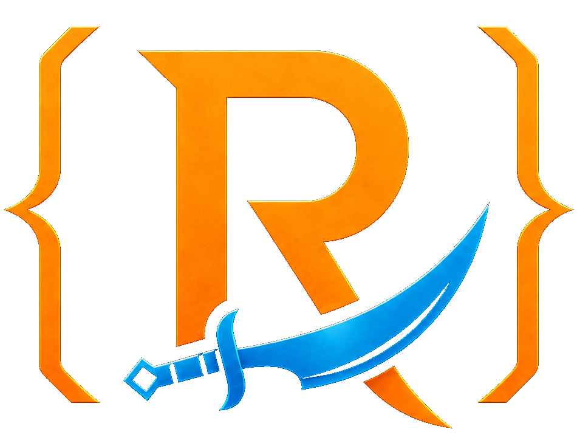

# Dragonwilds Sync ID v1Comment
Any line beginning with #, ;;, or // is ignored. Use comments for humans, not instructions.
ID.txt gives Dragonwilds Sync a safe, portable identity for your mod and its custom items. This guide explains every line, exactly how the parser treats it, and how icons travel from a normal mod archive into application-generated .rsdwl packages.
ID.txtStart with this example. Change the values after each colon; keep the field names on the left.
# Dragonwilds Sync ID v1
Schema: DragonwildsSync.ID.v1
ModId: example-community-mod
Name: Example Community Mod
Version: 1.0.0
Revision: 1
Author: Your Modder Name
RuntimeRole: both
HOTLOAD = YES
Description: One plain sentence explaining what the mod does.
Tags: QoL; Storage
Nexus: https://www.nexusmods.com/runescapedragonwilds/mods/0000
Item: {"ITEM Name":"ITEM_ExampleSword","PersistenceID":"/Game/Mods/Example/ITEM_ExampleSword.ITEM_ExampleSword","DisplayName":"Example Sword","Icon":"items/icons/example-sword.png","AssetPath":"/Game/Mods/Example/ITEM_ExampleSword"}ExampleCommunityMod/
├── ID.txt
├── Scripts/ or dlls/
└── items/
├── manifest.json
├── icon-manifest.json
└── icons/
└── example-sword.pngThe effective mod root wins over an outer download-wrapper folder. For PAK files, recognized sidecars beside the payload may also provide metadata.
Only ModId and a useful Name should be considered essential author hygiene. The remaining lines add versioning, presentation, runtime behavior, links, and item records.
# Dragonwilds Sync ID v1Any line beginning with #, ;;, or // is ignored. Use comments for humans, not instructions.
Schema: DragonwildsSync.ID.v1Documents the contract version. The current parser recognizes the file by its fields and ignores this value during normalization.
ModId: example-community-modUse one durable ID and never recycle it for a different mod. Maximum 160 characters. It also becomes the default ModId on Item rows.
Name: Example Community ModThe readable title shown on placards and repositories. Maximum 200 characters. Aliases accepted: ModName and Title.
Version: 1.0.0Your public version string, up to 80 characters. Keep it sortable and change it when users receive a new payload.
Revision: 1Use when the package metadata or item definitions change independently of the public mod version. Aliases: Rev and MetadataRevision.
Author: Your Modder NameThe creator name shown to users, up to 200 characters. Creator, By, Modder, and Authors are accepted aliases.
RuntimeRole: bothChoose exactly client, server, both, or tooling. Unknown values safely become both. host/dedicated normalize to server.
HOTLOAD = YESThe canonical writer emits exactly HOTLOAD = YES or HOTLOAD = NO. The parser also accepts HotloadCapable, Hotload, LiveEditing, or LiveEdit, with either : or =. True values are YES, true, 1, on, or enabled.
Description: One plain sentence...Plain display text, never HTML or code. Maximum 4,000 characters. Aliases: About and Summary.
Tags: QoL; StorageSeparate tags with semicolons or commas. Duplicates are removed case-insensitively; at most 24 tags are kept, each up to 40 characters.
Nexus: https://...Any field containing an http:// or https:// value becomes a labeled link. At most 12 unique links are kept. Non-web schemes are ignored.
Item: { ... }Repeat one line per item, up to 4,096. JSON is preferred; pipe-separated key=value pairs are also accepted. See the item-field table below.
If the file is named ID.txt and sits at the effective mod root, no name, schema, or ModId is required for the launcher to recognize the hotload declaration.
HOTLOAD = YESCase does not matter. Spaces and punctuation in the key are removed during normalization, and the earliest : or = separates key from value.
{
"schema": "DragonwildsSync.ID.v1",
"source_filename": "ID.txt",
"legacy": false,
"mod_id": "",
"name": "",
"version": "",
"revision": "",
"description": "",
"runtime_role": "both",
"hotload_capable": true,
"author": "",
"tags": [],
"links": [],
"items": []
}HOTLOADKey becomes hotload; YES becomes boolean true.ModId / ID / ModIdentifierBecomes mod_id, maximum 160 characters.Name / ModName / TitleBecomes name, maximum 200 characters.Version / ModVersionBecomes version, maximum 80 characters.Revision / Rev / MetadataRevisionBecomes revision, maximum 80 characters.Description / About / SummaryBecomes description, maximum 4,000 characters.Author / Creator / By / Modder / AuthorsBecomes author, maximum 200 characters.RuntimeRole / Role / RuntimeBecomes client, server, both, or tooling; omitted/unknown becomes both.Tags / TagSplits commas or semicolons; deduplicates to 24 values of 40 characters.Any HTTP(S) valueBecomes a labeled link, deduplicated and capped at 12.Item / ItemRecordParses JSON or pipe-separated key=value pairs into a bounded item record.Unknown non-URL fieldIgnored. It is never executed or interpreted as a launcher command.ID.txt in with the mod.A normal folder, ZIP, or manually packed .rsdwl can carry the file directly. Dragonwilds Sync discovers and reads it during staged installation and every mod inventory scan; .rsdwl is not required for basic mod identity or HOTLOAD detection.
YourMod.zip
+└── OptionalWrapper/
+ └── YourMod/
+ ├── ID.txt
+ └── mod payload...Place ID.txt beside the effective payload root. Outer download or Nexus wrapper folders are allowed.
Stage safely. Sync opens the normal archive in staging and never executes metadata.
Find the effective root. Payload classification identifies the actual UE4SS, RuneSchema, or PAK mod folder inside optional wrappers.
Discover identity. At that root, Sync searches case-insensitively for canonical ID.txt, then legacy identity.txt and identities.txt.
Read within bounds. The file must be at most 512 KiB and is decoded as UTF-8 with replacement for malformed bytes.
Normalize recognized fields. Comments and section labels are skipped; aliases, :/=, tags, URLs, runtime role, items, and booleans are bounded. Unknown non-URL fields are ignored.
Apply safe metadata. Placards, tags, repositories, Item Editor, and Spawner consume the normalized record. Nothing in the file is launched as code.
HOTLOAD = YEShotload_capable: true
Runtime role becomes both. Identity display may use the folder/inventory name. Tags, links, items, author, version, and description stay empty.
Item: lineITEM NameInternal searchable nameExample: ITEM_ExampleSword. Aliases include Item, Name, and ITEM_NAME after normalization.
PersistenceIDThe merge identityThe exact stable save/runtime identity. If two sources declare the same value, Dragonwilds Sync treats them as the same item.
DisplayNameHuman-facing labelOptional but strongly recommended. Alias: Label.
IconPortable relative icon pathUse a path inside the package such as items/icons/example-sword.png. Never use a machine-absolute path.
AssetPathRuntime asset locationThe Unreal content path used to resolve or spawn the item, up to 1,000 characters.
ModIdOwning modOptional per row. When omitted, the file-level ModId is copied into the normalized item record.
ID.txt, then legacy identity.txt and identities.txt.Key: Value and Key=Value work.dws-secret:// values become blank.PersistenceID; item-name and display-name searches remain available.A mod-author .rsdwl is a ZIP-readable archive with one recognizable mod folder. It uses the same effective-root rules as a normal mod ZIP, so the package shown on the left is now the format to follow everywhere.
.rsdwl layoutExampleMod.rsdwl
`-- ExampleMod/
|-- ID.txt
|-- mod payload...
`-- items/
|-- manifest.json
|-- icon-manifest.json
`-- icons/*.pngBuild a normal ZIP with this layout, then use the .rsdwl extension. The payload may be UE4SS, RuneSchema, or PAK content. Keep ID.txt beside the effective payload root and keep item icons under package-relative paths.
ID.txt case-insensitively at the effective mod root.No application export manifest is required for an author-packed mod. The mod folder and its payload remain the source of truth.
Use .zip while testing or publish the same ZIP-readable structure as .rsdwl. Do not add the older PackageManifest/ or ModInfo/ wrapper shown in previous guidance.
When Dragonwilds Sync exports a profile package, the launcher creates its own signed and checksummed root manifest.json with profile/, worlds/, and items/ payloads. That profile bundle is generated by Sync and is not the format mod authors should hand-pack. Connected-world passwords and administrative credentials are always excluded.
Use PNG, JPEG, WebP, or GIF. Keep a custom item icon at or below 2 MiB.
Store it under your mod, preferably items/icons/.
Reference it with a forward-slash relative path; never C:\... or /home/....
Let Sync generate icon-manifest.json; it records path, SHA-256, and media type.
Keep each icon inside the import root. Paths containing escape traversal are rejected.
Export through Sync so package checksums and icon payload records are generated together.
Schema: DragonwildsSync.ID.v1
ModId: your-stable-mod-id
Name: Your Mod Name
Version: 1.0.0
Author: Your NameAdd RuntimeRole, HotloadCapable, tags, links, and Item rows only when you know their correct values.
Experimental codename: Complete Authoring Tools
A community experiment built on official RuneSchema 0.6.0. It preserves the official loaders and spawn foundation, then adds a five-page UE4SS management interface, deterministic mod ordering, collision reports, authoring tools, spawn scale, explicit drop multiplication, and registry-safe identity overrides.
This is the only UE4SS download intended for this RuneSchema build. It preserves the original compatible binary and includes DoEarlyScan = 1, the Unreal Engine 5.6 override, disabled hot reload, and the stable UObject-array cache setting.

Source is maintained on GitHub: review the current 0.6.3 source on main, the historical experimental branch, or the draft upstream pull request. The prerelease provides the installable RuneSchema mod and its separately packaged matching UE4SS runtime.
Credits and support: Okaetsu created PalSchema, Snorkles created RuneSchema, Jonesing4Space created the additional experimental features, and the RSDW Modding Community contributed testing, research, and community support. This community variant is not endorsed, maintained, or supported by the original RuneSchema author. Please direct variant questions and bug reports to the Dragonwilds Sync issue tracker, not upstream RuneSchema. Original attribution remains intact: official 0.6.0 source and official documentation.
Feature map
The experimental build keeps the official content formats and clearly separates inherited behavior from new tooling.
mods.txt enable switches, Up/Down controls, comments, and saved order.DropIncreasePercent, independent of size.PersistenceID and InternalName for assets, recipes, and journals.Interface gallery
Scroll through the compact previews, then select any view for the full-size rotating gallery.
Open the ZIP and locate the included RuneSchema folder.
Copy it to RSDragonwilds/Binaries/Win64/ue4ss/Mods/RuneSchema/.
The required folder is RuneSchema/config, not configs. Content mods belong in RuneSchema/mods/.
Example Mod A : 1
Example Mod B : 01 enables a RuneSchema content mod and 0 disables it without deleting its folder. This does not replace UE4SS's root mod activation file.
Variant DLL SHA-256: 6820E79E282A757EC5587FA39F1FD98A87AFCFA57C525FF6498F81544FFD9142